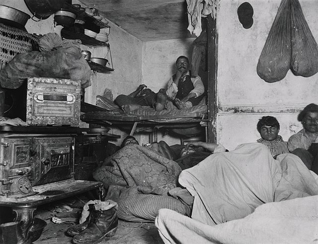
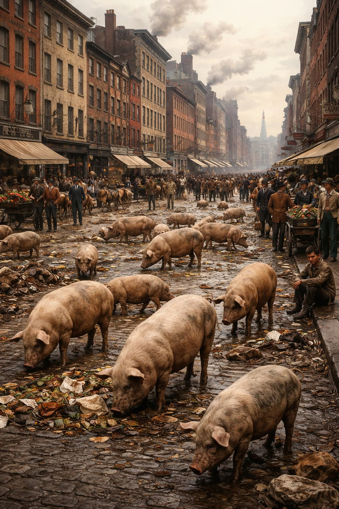
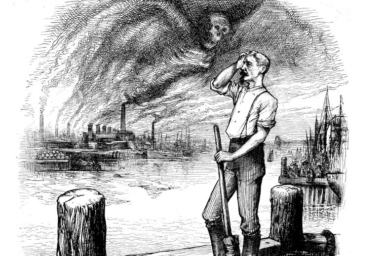
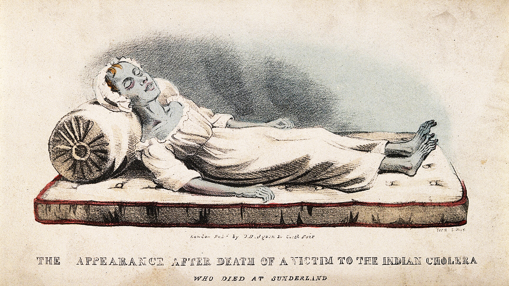
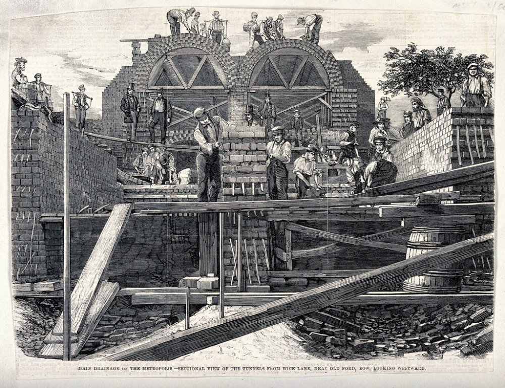

Tenements, Disease, and the Birth of Public Health
Chapter 20: Urbanization — Lecture 3
How density, poverty, and infrastructure turned American cities into biological experiments—and how disease forced the modern state into existence
The Biological Reality of Urbanization
🔑 Key Concept
Urbanization did not just reorganize work and culture.
It reorganized life, death, and the body.
Nineteenth-century cities were not merely crowded—they were toxic environments.
Part I
The Tenement City
Density Without Infrastructure
The Basic Problem
People arrived faster than cities could adapt.
Explosive population growth in New York, Chicago, Boston, Philadelphia
Housing built for profit, not safety
Working-class and immigrant families crowded into subdivided apartments
Key Features of Tenement Life
Entire families in one room (6–10 people in 10×12 feet)
Basement apartments prone to sewage flooding
Poor ventilation—windows opened to narrow air shafts
Shared privies, often overflowing
Multiple families sharing single water sources
×
Basement Apartments: The Deadliest Housing
Basement apartments were below street level—the cheapest, most dangerous housing available.
Conditions: Walls covered in slime and moisture, regular sewage flooding when privies overflowed, no natural light, perfect conditions for tuberculosis and typhoid.
Who lived there: The poorest families—recent immigrants, Black families, the desperately poor. Economic position literally determined whether you lived or died.
×
The Ventilation Problem
Tenement apartments often had windows that opened not to fresh air, but to narrow air shafts between buildings—sometimes only 5-6 feet wide.
Result: Little fresh air circulation, trapped heat in summer, and disease-spreading conditions year-round. Tuberculosis thrived in these poorly ventilated spaces.
×
Privy Vaults and Disease
A privy vault was an outdoor toilet—essentially a hole in the ground where human waste accumulated.
The problem: When full, waste overflowed into streets and basements. Worse, waste seeped through soil into groundwater, contaminating the wells people drew drinking water from.
Disease connection: Cholera, typhoid, and dysentery are all waterborne diseases. When privies contaminated wells, entire neighborhoods got sick.
The Scale of Squalor
🔑 Example
A two-story building with 102 residents sharing one privy.

The First Attempts at Housing Regulation
By 1865, New York faced a housing crisis:
More than 500,000 people living in 15,000 tenements
The "Old Law" (1879): James Ware's dumbbell design became standard
×
The Dumbbell Tenement: Reform Without Enforcement
The 1879 Tenement House Act required apartments to have windows for ventilation. Architect James Ware designed the "dumbbell tenement"—shaped like a dumbbell from above, narrow in the middle with wider ends.
The air shaft solution: The narrow indentation created an "air shaft" between buildings, technically meeting legal requirements for windows and ventilation.
Why it failed: The shafts were only 5–6 feet wide, ran from ground to roof, and became garbage chutes and disease incubators. They trapped filth, blocked light, and created perfect conditions for disease. Developers technically complied with the law while maintaining profitable but deadly conditions.
The lesson: Reform laws without enforcement don't work. Real reform wouldn't come until the New Law of 1901.
The Dumbbell Tenement
A classic example of reform without enforcement
Air shafts became garbage chutes and disease incubators
Critical Point
🔑 Why Tenements Were Dangerous
Tenements were dangerous not because of ignorance alone, but because landlords prioritized profit over health.
Structural inequality produced structural disease.
Part II
Filth, Waste, and the Ecology of the City
From housing to infrastructure
The Reality of Urban Sanitation
19th-century cities were literally stinking, filthy places.
Urban sanitation: water and a broom—if that
Chamber pots dumped in streets; cesspits overflowed
Thousands of pigs roamed the streets
Manure piles from horses (thousands of pounds per day)
Dead animals, industrial waste, garbage in public spaces
No coordinated waste removal
Pigs as Urban "Sanitation"

Why pigs?
Free garbage removal
Poor people's livestock
No regulations until 1860s
The problems:
Created more filth than they consumed
Spread disease
Made streets dangerous
Pig removal became a class conflict
The Failure of Urban Sanitation
The Problems:
No coordinated waste removal
Street cleaning as political sinecures
Rivers used for both drinking water and sewage
Corruption and incompetence
The Reality:
Wealthy neighborhoods cleaner
Poor neighborhoods ignored
Disease concentrated in tenement districts
Inequality visible in mortality rates
×
Sinecures: Political Patronage Jobs
A sinecure is a job that requires little or no actual work but provides income and status—essentially a political favor or reward for loyalty.
In urban sanitation: Street cleaning jobs were often given as political appointments to reward supporters, not based on ability or willingness to actually do the work. Result: streets stayed filthy because workers didn't perform their duties.
Why this mattered: This corruption prevented effective sanitation even when systems existed on paper.
Jacksonian-Era Ideology vs. Public Health
🔑 The Ideological Problem
Plumbing and sewerage remained private responsibilities.
Americans resisted taxation and municipal regulation—even as cities became breeding grounds for epidemic disease.
Cities as Ecological Systems
🔑 Key Concept: Urban Ecology
Cities are interconnected systems of waste, water, bodies, and microbes.
Filth was not accidental—it was structurally produced by rapid urban growth without planning.
📝 Pause & Process
Quick Check
Which of the following best explains why early housing reforms (like the 1879 "Old Law") failed to improve tenement conditions?
Tenement residents refused to cooperate with inspectors
Landlords found loopholes and minimal compliance was not enforced
The reforms were too expensive to implement
Immigrants preferred their traditional housing styles
Part III
Disease Before Germ Theory
Miasma and Moral Judgment
The Dominant Belief: Miasma Theory
Miasma theory held that disease was caused by "bad air" from rotting filth.
From ancient times through the mid-1800s, most people believed disease was caused by "miasma"—bad air or poisonous vapors rising from rotting organic matter.
Core beliefs: Decay produces poisonous gases; vapors cause illness when inhaled; strong odors = dangerous miasma; night air especially dangerous.
What they got right: Cleaning streets, improving drainage, removing garbage, and building sewers did reduce disease—just not for the reasons people thought. It wasn't the bad air that was dangerous; it was the bacteria in the filth.
What they got wrong: Couldn't explain person-to-person transmission, couldn't identify disease-causing organisms, encouraged moral judgments about the sick.
The Problem with Miasma Theory
🔑 The Irony
Belief in sanitation existed—but implementation failed completely.
Doctors believed filth caused disease, but cities stayed filthy anyway.

Disease as Moral Judgment
Miasma theory had social consequences:
Disease seen as punishment for vice, intemperance, or filthiness
Poor people, immigrants, and African Americans blamed for illness
Cholera deaths viewed as suspicious or deserved
Calls for prayer and fasting during epidemics
🔑 Critical Point
Disease explanations reinforced existing class and racial hierarchies.
Cholera: A Case Study in Urban Disease

Why cholera mattered:
Cholera killed quickly and visibly
Spread through contaminated water
Hit poor neighborhoods hardest
Created panic and social conflict
Forced questions about public responsibility
×
Cholera: The Disease That Changed Cities
Cholera is a bacterial infection of the small intestine caused by consuming contaminated water or food. It causes severe diarrhea and dehydration, and can kill within hours if untreated.
Why it was terrifying: Cholera struck suddenly and killed quickly—a healthy person could be dead by nightfall. The symptoms were horrifying: violent purging, blue skin from dehydration, muscle cramps. There was no cure.
How it spread: Through water contaminated with the feces of infected people. When privies leaked into wells or rivers used for drinking water, cholera spread rapidly.
Social impact: Cholera epidemics created panic, social conflict, and forced Americans to confront the interdependence of urban life. You couldn't protect yourself if your neighbor's waste contaminated your water.
📝 Pause & Process
Quick Check
How did miasma theory reinforce class and racial hierarchies in 19th-century cities?
It correctly identified contaminated water as the cause of disease
It blamed individual moral failings for disease rather than structural conditions
It encouraged wealthy people to move to the suburbs
It led to the construction of better sewers in poor neighborhoods
The Shift Toward Environmental Explanations
Gradually, some reformers began to emphasize environment over morality:
Disease concentrated in specific neighborhoods with bad sanitation
Clean water and sewers reduced illness regardless of morality
Structural conditions, not individual character, determined health
This opened space for public health intervention
🔑 The Breakthrough
Recognizing that disease was environmental, not moral, justified government action to improve conditions.
The Birth of Public Health
The crisis of urban disease forced the creation of new government functions:
Permanent boards of health
Systematic vital statistics collection
Quarantine and isolation systems
Food and milk inspection
Compulsory vaccination
Tenement inspections and regulations
×
Boards of Health
Permanent boards of health were government agencies responsible for protecting public health. They had the power to enforce sanitation regulations, quarantine the sick, inspect housing, and respond to epidemics.
Why this was radical: Before the late 1800s, most cities had no permanent health authority. During epidemics, temporary boards might form and then dissolve. Permanent boards represented a major expansion of government power—they could enter private property, regulate private businesses, and force compliance with health regulations.
Example: The New York Metropolitan Board of Health (1866) pioneered aggressive intervention during cholera epidemics—cleaning streets, removing garbage, quarantining the sick, and prosecuting landlords who violated sanitation codes.
×
Vital Statistics
Vital statistics are systematic records of births, deaths, and causes of death. Before the late 1800s, most cities didn't keep reliable health statistics.
Why this mattered: You can't fix a problem you can't measure. Vital statistics allowed health officials to track disease patterns, identify problem areas, and evaluate interventions. Death maps showing cholera clusters around contaminated water pumps provided powerful evidence for environmental theories of disease.
The bureaucratic revolution: Collecting vital statistics required creating new government agencies, hiring trained professionals, and standardizing record-keeping across jurisdictions—a major expansion of state capacity.
The Infrastructure Revolution
Major public investments:
Comprehensive sewer systems
Filtered water supplies
Professional street cleaning
Garbage collection systems
Public parks and open spaces

These projects cost millions—paid for by taxes and municipal bonds
The Results: Disease Declined
By the early 20th century, major epidemic diseases had been largely controlled in American cities:
Cholera eliminated by clean water systems
Typhoid dramatically reduced
Infant mortality declined
Life expectancy increased
🔑 The Verdict
Government intervention worked. Public health infrastructure saved millions of lives.
Part IV
Indoor Plumbing
A Double-Edged Sword
The Arrival of Indoor Plumbing
Water-closets (indoor toilets) appeared slowly and unevenly:
Colonial EraIndoor water-closets unknown
Late 1700sAppear in Philadelphia—but don't catch on
Mid-1800sIncreasingly common in middle- and upper-class homes
×
Water-Closets: Early Indoor Toilets
A water-closet was an indoor toilet that used water to flush waste away. The term distinguished it from the outdoor privy or chamber pot.
Why slow adoption? Early water-closets were smelly (poor seals and ventilation), noisy (gurgling sounds), and difficult to clean. Many people preferred outdoor privies where odors stayed outside.
Status symbol: By mid-century, improved designs made water-closets more practical, but only middle- and upper-class families could afford them. Indoor plumbing became a class marker.
Central Waterworks Expand
Between 1840–1870, cities built central waterworks:
Aqueducts and reservoirs built to supply cities
Initially not intended for domestic consumption
Purpose: fire protection, street cleaning, industrial use
💭 The Irony
Convenience, not hygiene, drove adoption. The connection between hygiene and disease was not understood.
The Fatal Disconnect
Many homes had plumbing without connection to sewers:
Water In
Private wells
Rainwater cisterns
Sometimes central waterworks
Waste Out
Cesspits in basements
Cesspits in backyards
No sewer connection
When Plumbing Makes Things Worse
Increased water usage created new problems:
Cesspits overflowed and flooded into streets
Faulty pipes leaked sewer gas into homes
Wells contaminated by nearby cesspits
No understanding of how disease spread through water
🔑 The Paradox
"Modern" plumbing without sewers made cities more dangerous, not safer.
×
Sewer Gas: The Invisible Threat
Sewer gas is a mixture of toxic gases (methane, hydrogen sulfide, ammonia) produced by decomposing sewage. Poorly designed pipes allowed these gases to leak into homes.
Why people feared it: They believed sewer gas itself caused disease (miasma theory). Wrong mechanism, but reasonable fear—sewer gas indicated sewage exposure, and sewage carried deadly bacteria.
The real danger: The gas didn't cause disease directly, but it signaled proximity to sewage that *did* carry cholera, typhoid, and dysentery bacteria.
The Stage Is Set for Disaster
🔑 The Perfect Storm
By mid-century, American cities had:
Dense populations in tenements
Contaminated water supplies
Inadequate waste disposal
Increased water usage overwhelming systems
No understanding of waterborne disease
Enter cholera—the disease that would force Americans to rethink everything.
📝 Pause & Process
Quick Check
Why did indoor plumbing initially make urban disease problems worse rather than better?
Water-closets were too expensive for most families to install
Indoor toilets increased water usage but cities lacked sewers to carry waste away
People preferred outdoor privies and refused to use indoor plumbing
Doctors warned that indoor plumbing would spread disease
Part V
Cholera
The Disease That Changed America
Why Cholera Matters
Cholera provides a lens for understanding the entire 19th century.
An unintended consequence of urbanization and mass migration
Responses reveal transformations in politics, religion, and medicine
Gave rise to sanitary reform and public health movements
Foreshadowed Progressive-era thinking
🔑 Historical Comparison
19th-century cholera = 14th-century plague
A New Disease Arrives
No evidence of cholera in the West before the 19th century.
Emerged from India (endemic in Ganges Delta)
Spread globally via imperialism and trade
Product of the transportation revolution
Americans initially believed they would be immune (American exceptionalism)
Inspired more fear than any other disease
×
Transportation Revolution and Disease
Cholera became a pandemic disease because of 19th-century transportation improvements.
How cholera spread:
Steamships crossed oceans faster than disease incubation periods
Railroads moved infected people rapidly across continents
Canals connected waterways and populations
Immigrant ships with crowded steerage encouraged transmission
The irony: Technologies celebrated as "progress"—steamships, railroads, canals—also spread deadly disease faster than ever before. Modernity carried biological costs.
The American Cholera Epidemics
Three major outbreaks devastated American cities:
1832First cholera pandemic reaches America
1849Second cholera pandemic—even more deadly
1866Third pandemic, concentrated in immigrant neighborhoods
📊 Death Toll Estimates
New York: 5,000+ deaths per outbreak
Chicago: 3,500 deaths (~5% of population)
Nationwide: 150,000 deaths estimated
"Bring Out Your Dead"
Cholera overwhelmed 19th-century cities:
Hospitals couldn't cope
Bodies couldn't be buried fast enough—corpses lay in streets
Buried in shallow potter's fields; rats consumed bodies
Dead animals created additional hazards
Cholera spread on immigrant barges and steamboats
💀 The Reality
In some outbreaks, 10–50% of city populations died.
Two Competing Interpretations of Cholera
"God's Justice"
Disease as punishment for sin
Individual moral failing
Solution: prayer, repentance
Reinforces hierarchy
"Man's Injustice"
Disease as product of poverty
Structural causation
Solution: reform, regulation
Challenges hierarchy
Cholera as "God's Justice"
Many Americans interpreted cholera in religious terms:
Divine punishment for sin—like the Biblical flood
Blamed on intemperance, impudence, filthiness
Cholera often struck prostitutes, drunks, and the poor
Dying of cholera carried social suspicion
🔑 Government Response
Governments proclaimed Days of Prayer and Fasting.
Cholera as "Man's Injustice"
🔑 The Radical Argument
Cholera exposed the depth of poverty and misery in American cities.
Others drew the opposite conclusion:
Worst sufferers: African Americans and Irish immigrants
To prevent future epidemics, address structural causes:
Poverty
Ignorance
Urban living conditions
This thinking fed into later reform movements
What Cholera Revealed
🔑 Key Claim
Cholera exposed the biological consequences of inequality.
Disease followed the contours of class, race, and power.
Disease spread through shared systems—water, labor, and urban space. Wealth could not fully insulate the rich.
The Medical Profession in Crisis
Doctors in the 19th century were not highly respected:
Medical schools admitted anyone who could pay
Doctors could cure very few diseases
Treatments often worse than the illness
Grave robbing scandals damaged reputation
💀 Cholera Made It Worse
Doctors were unable to prevent or cure cholera, further damaging medicine's reputation.
×
Grave Robbing and "Resurrectionists"
Medical schools needed bodies for anatomical study, but legal cadavers were scarce.
The practice: "Resurrectionists" dug up fresh graves and sold bodies. Nighttime grave raids targeted pauper and African American cemeteries especially.
Public outrage: Families guarded graves, cemeteries built watchtowers, scandals made international news. People believed doctors let patients die to obtain bodies.
Result: Deep public distrust of the medical profession.
Medical "Treatments" for Cholera
Doctors relied on miasma theory and pre-disposing causes:
Bloodletting
Laudanum (opium tincture)
Tobacco smoke enemas
Plugging the rectum with beeswax or oilcloth
Calomel (mercury)
Hot mustard baths
💀 The Result
These treatments often harmed patients more than they helped.
Quacks and Patent Medicines
With little faith in doctors, people turned to alternatives:
Quacks and home remedies flourished
Newspapers printed "cholera cures"
Drug stores distributed handbills
"Cholera-specific" patent medicines were mass-produced
💰 The Marketplace of Fear
Epidemic created a booming market for dubious cures.
📝 Pause & Process
Quick Check
Why did some reformers argue that cholera revealed "man's injustice" rather than "God's justice"?
Doctors had proven that cholera was caused by bacteria, not divine punishment
Cholera killed people randomly regardless of their moral character
Cholera deaths concentrated in poor neighborhoods with bad sanitation, suggesting structural causes
Religious leaders rejected the idea that God would punish the innocent
Part VI
The Sanitarians
Public Health, Sewers, and the Fight Against Urban Disease
The "Sanitary Idea"
A revolutionary concept emerged in mid-19th century Britain:
🔑 Core Insight
Disease depends upon sanitation.
The physical environment profoundly influences health
Pure water supply is a necessity, not just a convenience
Sewage removal is essential to public health
Government must intervene to protect citizens
Edwin Chadwick: The Great Reformer
Role: British lawyer, social reformer, architect of modern public health
Influenced by: Jeremy Bentham, John Stuart Mill (utilitarian philosophy)
Key belief: Activist central government can solve social problems
🔑 His Legacy
His 1842 Report transformed public health forever.
John Snow and the Broad Street Pump
The most famous epidemiological detective story in history.
1831Snow witnesses cholera in coal mines as medical apprentice
1849Snow publishes theory: cholera spreads through contaminated water
Aug–Sept 1854Soho outbreak: 616 dead in days. Snow maps cases, identifies pump
Sept 8, 1854Pump handle removed. Outbreak ends
The Ghost Map
Snow's famous map showed cholera deaths clustered around the Broad Street pump—early evidence of modern epidemiological methods
The Miasma Paradox
Sanitarians believed in miasma theory—and they were wrong about the mechanism.
🔑 But Here's the Paradox
Being wrong about why didn't stop them from doing the right things: cleaning streets, removing garbage, building sewers, supplying clean water.
What They Believed
Disease from "bad air"
Organic decay produces poisonous vapors
Smell = danger
Ventilation prevents disease
What They Did Right
Removed sewage from streets
Built water systems
Cleaned up garbage
Improved drainage
Building the Infrastructure: Sewers and Waterworks (1840–1880)
American cities began their "sanitary awakening" in the mid-19th century.
Chicago (1856): E.S. Chesbrough designs first comprehensive combined sewer system
Brooklyn (1857): J.W. Adams builds separate sanitary sewers
Central waterworks: expand rapidly between 1840–1870
Problem: most not intended for domestic consumption at first
The Metropolitan Board of Health (1866)
New York City creates America's first coordinated response to epidemic disease.
1866Board organized as cholera threatens
Actions TakenForced contractors to clean streets, removed 160,000 tons of manure, disinfected 6,500 privies
ResultFirst formal American effort at epidemic prevention
🔑 The Paradigm Shift
Disease might not be curable, but it could be prevented through organized community effort.
George Waring: Sanitation Engineer
Role: Sanitation engineer, reformer, NYC Street Cleaning Commissioner (1895–98)
Innovations:
Separate sewer system design
Professional street cleaning (not political patronage)
White uniforms for sanitation workers (dignity)
Systematic refuse collection
"Cleanliness is a civic responsibility."
The "Gospel of Public Health"
By the 1870s–1880s, American thinking shifted.
Old Thinking
Disease is God's punishment
Moral failings cause illness
Individual responsibility
Private solutions
New Thinking
Disease is environmental
Sanitary conditions determine health
Community responsibility
Government intervention required
🔑 Linked to Social Gospel Movement
Clergy increasingly emphasized environmental causes of suffering, not just individual sin.
Paradigm Shift: Miasma → Germ Theory
Paradigm: A worldview underlying the theories and methods of a scientific field
1860sLouis Pasteur demonstrates microorganisms cause fermentation and disease
1870s–80sRobert Koch identifies specific bacteria causing TB, cholera, anthrax
1890sGerm theory becomes dominant; water filtration and chlorination begin
🔑 Political Consequence
Government intervention becomes legitimate. Public health becomes a justification for regulation.
From Cholera to Modern Public Health
🔑 The Sanitarians' Legacy
Established connection between environment and health
Built infrastructure (sewers, waterworks) that saved millions of lives
Created public health institutions (boards of health, sanitary engineers)
Justified government intervention in formerly private matters
Laid foundation for Progressive Era reforms
They got the mechanism wrong (miasma vs. germs) but the solutions right (clean water, sewers, sanitation).
Urban Disease Forces Collective Action
🔑 The Radical Idea
The city could not survive without collective action.
Public health becomes:
A foundation of modern governance
A bridge from urban crisis to Progressive reform
Evidence that laissez-faire had biological limits
Bridge Forward: From Sanitation to Progressivism
The sanitary reform movement pioneered methods that would define Progressivism:
Investigation → data-driven reform
Expertise → public health officials as authorities
Government intervention → state responsibility for welfare
Crisis → cholera and typhoid justified expanded state power
Next lecture: These urban experiments become a national movement.
Key Takeaway
🔑 Remember This
Modern public health emerges not from compassion alone, but from fear, death, and necessity.
Urbanization made disease unavoidable—and reform unavoidable with it.
Government growth wasn't ideological—it was practical. Collective problems required collective solutions once cities became death traps.
Conclusion: Disease and the Modern State
🔑 The Big Takeaway
The urban disease crisis forced Americans to accept that health was a public responsibility, not just a private matter.
This acceptance created the foundation for the modern regulatory state.
Modern government grew not from ideology alone, but from crisis and necessity.